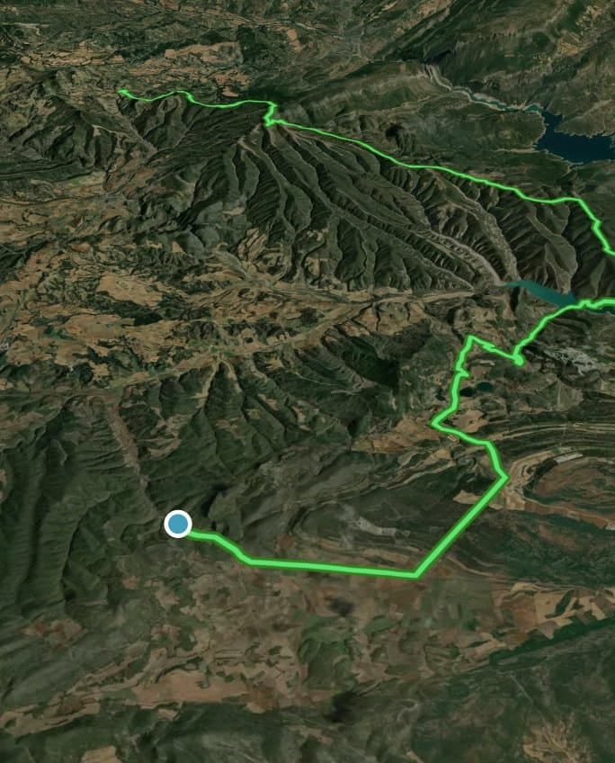

Vida
El Beato Manuel Segura López, cuyo nombre religioso era Manuel de la Virgen del Pilar, nació el 22 de enero de 1881 en Almonacid de la Sierra, Zaragoza, España. Desde joven estuvo relacionado con las Escuelas Pías. Ingresó en la Orden en 1899, cuando tenía 18 años, y comenzó su formación religiosa en Peralta de la Sal. Profesó como escolapio en 1901 y continuó sus estudios de Filosofía, Teología y Pedagogía. Finalmente, fue ordenado sacerdote en Barbastro el 25 de mayo de 1907.
Después de su ordenación, desarrolló gran parte de su vida como maestro y educador. Trabajó en diferentes colegios de las Escuelas Pías, entre ellos los de Barbastro, Tamarite, Pamplona y Tafalla. Su tarea estaba especialmente relacionada con la enseñanza de niños y jóvenes, pero también participó en la formación de jóvenes que querían comenzar una vida religiosa.
En Peralta de la Sal tuvo una de sus responsabilidades más importantes: fue nombrado maestro de novicios, es decir, estaba encargado de acompañar y formar a los jóvenes que se preparaban para convertirse en religiosos escolapios. Este trabajo requería no solamente enseñar conocimientos religiosos, sino también acompañarlos en su formación personal y espiritual.
En 1936, durante la Guerra Civil Española, la comunidad religiosa de Peralta de la Sal sufrió una persecución. Manuel Segura fue detenido junto con otros miembros de la comunidad el 23 de julio de 1936. Durante esos días continuó preocupándose por los jóvenes que estaban bajo su responsabilidad. Finalmente, el 28 de julio de 1936, fue llevado a Gabasa junto con el hermano David Carlos de Bergara Marañón y ambos fueron asesinados.

(Ruta de la muerte del Beato)